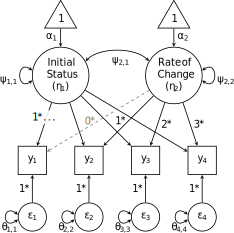
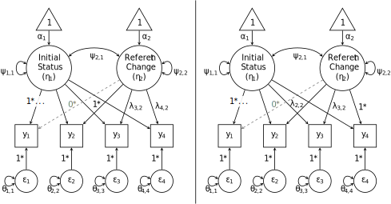
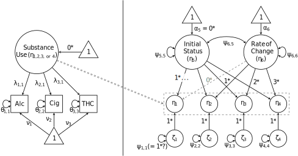
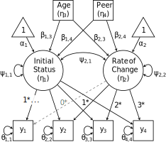

13 Latent Growth Curve Models
In structural equation modeling (SEM), multiple indicators of a construct can be modeled using exploratory/confirmatory factor analysis (E/CFA). A latent common factor (or common cause) is posited as being the source of shared variance among the observed indicators, and the measurement models for multiple common factors can be embedded within a larger SEM.
This chapter introduces another type of common factor, often called a growth factor. Rather than repeatedly measuring a construct with different indicators of that construct (e.g., “I feel …”: happy, glad, cheerful, joyous), growth factors are measured by the same indicator on multiple occasions. Growth factors are interpreted as patterns of change in the indicators’ expected values, where the type of pattern is defined by the factor loadings.
In this chapter we first import and summarize example data, then we use a single-factor model to illustrate differences between growth factors and other common factors (e.g., specification and interpretation). Readers familiar with multilevel modeling (MLM) will benefit from a brief comparison between MLM and SEM for the same data. Next, we 2-factor model for linear growth (again comparing it to a MLM for change) and saturated growth model (comparing it to repeated-measures ANOVA). We conclude by discussing important caveats with some common extensions to the latent growth curve model (LGCM):
- predictors of growth
- latent indicators of growth
- comparing growth across groups
13.1 Prepare Data and Workspace
library(lavaan)For illustration, we will use summary statistics reported by Duncan and Duncan (1996, pp. 329–330). alcohol, cigarette, and cannabis use (thc) were each measured annually for 4 years using a 5-point scale:
- never used
- previous but not current use
- current use of < 4 times per month)
- current use of 4–29 times per month
- current use of \(\ge 30\) times per month
We also imported 2 variables measured at the beginning of the study:
age(recruited between 11 and 15 years old)peerencouragement, measured by summing 3 items (alc,cig,thc) using a 5-point Likert scale indicating how much their best friend encouraged use of that substance
The following summary statistics were observed for the \(N=321\) adolescents who provided complete data in all 4 years.
## variable names
vn <- c(paste0("alc", 1:4), paste0("cig", 1:4), paste0("thc", 1:4),"age","peer")
## mean vector
duncanM <- setNames(c(2.271, 2.560, 2.694, 2.965, 1.847, 2.043, 2.227, 2.510,
1.510, 1.672, 1.828, 1.947, 13.108, 6.193), nm = vn)
## they reported variances (squared SDs)
sqSDs <- c(1.004, .922, .832, .846, 1.305, 1.536, 1.645, 1.888,
.807, .896, 1.074, 1.125, 2.216, 8.844)
## correlation matrix (lower triangle)
tri <- c(1.000,
.640, 1.000,
.586, .670, 1.000,
.454, .566, .621, 1.000,
.568, .451, .390, .357, 1.000,
.531, .449, .360, .360, .850, 1.000,
.494, .449, .380, .425, .783, .815, 1.000,
.387, .393, .344, .473, .617, .702, .779, 1.000,
.602, .431, .408, .346, .706, .648, .576, .543, 1.000,
.522, .460, .394, .403, .644, .689, .687, .535, .759, 1.000,
.499, .461, .440, .472, .542, .592, .676, .566, .671, .790, 1.000,
.398, .385, .358, .472, .452, .522, .594, .644, .533, .642, .793, 1.000,
.497, .370, .429, .326, .418, .409, .337, .205, .456, .413, .345, .248, 1.000,
.336, .398, .300, .276, .397, .433, .386, .318, .388, .522, .421, .342, .273, 1)
## scale tri to make covariance matrix
duncanCOV <- getCov(x = tri, sds = sqrt(sqSDs), names = vn)
## sample size
N <- 32113.2 Random Intercept Model
Let’s focus on a single measure—alcohol use—measured on 4 occasions for each of \(N=321\) adolescents. A random-intercept model for Subject \(i\)’s alcohol use in Year \(t\) is frequently depicted in MLM as:
\[\begin{align} y_{i,t} &= \beta_{i,0} + \varepsilon_{i,t} \label{eq:ri} \\ &= (\gamma_{0} + u_i) + \varepsilon_{i,t} \label{eq:ri-decomp} \end{align}\]
indicating that each Subject \(i\) has their own intercept, so the random intercept \(\beta_{i,0}\) is itself a variable. As Eq. \(\ref{eq:ri-decomp}\) shows, the average intercept can be depicted as the sum of 2 components:
- the average intercept (\(\gamma_{0}\))
- This is the grand mean because there are no other predictors.
- individual deviations around \(\gamma_{0}\) (i.e., \(u_i\))
- This is how much each subject’s mean differs from the grand mean.
- This can also be interpreted as a Level-2 residual
The Level-1 residual (\(\varepsilon_{i,t}\)) is how much each subject’s time-specific alcohol use differs from their average alcohol use. Both residuals have distributional assumptions, often depicted as normally distributed with some variance:
\[u_i \sim \mathcal{N}(0, \tau_0) \ \ \ , \ \ \ \varepsilon_{i,t} \sim \mathcal{N}(0, \sigma)\]
This MLM can also be represented as a SEM. In fact, random effects are latent variables (Mehta & Neale, 2005; Skrondal & Rabe-Hesketh, 2004). The SEM representation of Eqs. \(\ref{eq:ri}\)–\(\ref{eq:ri-decomp}\) looks superficially different: there are different symbols, and Subject \(i\)’s \(t=1, \dots, T\) measurements are stored in a single vector \(\mathbf{y}_i\):
\[\begin{align*} \mathbf{y}_i &= \Lambda \mathbf{\eta}_i + \varepsilon_i \\ \mathbf{\eta}_i &= \alpha + \zeta_i \end{align*}\]
Note that many parameters from the full SEM are missing (e.g., indicator intercepts \(\tau\) and latent regressions \(\mathbf{B}\)) because they are merely 0 in this model. But the nonzero components of this SEM can all be mapped onto the MLM above (Bauer, 2003; Curran, 2003; Singer & Willett, 2003, ch. 8):
\[\mathbf{\eta}_i=\beta_{0,i} \ \ , \ \ \alpha=\gamma_0 \ \ , \ \ \zeta_i=u_i \ \ , \ \ \varepsilon_i=\varepsilon_i \ \ , \ \ \Lambda=\mathbf{1}\]
Note that the factor-loading matrix is merely a vector of ones, filling the role of the constant in a regression model. That is, a vector of ones is treated as a predictor, and its “slope” is the regression model’s intercept. The role of factor loadings in a LGCM is counter-intuitive because in most SEMs, we think of them as slopes. Instead, the loadings of a growth factor instead map onto observed variables in a multilevel regression, and random coefficients (\(\beta_{0,i}\)) are represented by the latent variables (growth factors: \(\mathbf{\eta}_i\)).
Figure \(1\). Random intercept model for alcohol-use data from Duncan and Duncan (1996).
The path diagram above illuminates the differences between a growth factor (here, a random intercept) and a common factor. First, factor loadings in a CFA are freely estimated, and they indicate how strongly an indicator is related to the common factor. In a LGCM, factor loadings are fixed to specify how the growth factor is interpreted. A random intercept’s loadings are all 1 because every occasion’s \(y_i\) is weighted equally to calculate the Subject \(i\)’s overall mean.
Second, indicator intercepts in a CFA are freely estimated, and are the indicators’ expected values when the common factor = 0. Because the common-factor mean is typically constrained to zero for identification, indicator intercepts are often simply the indicator means. In a LGCM, indicator intercepts are fixed to zero, but the growth-factor mean is freely estimated. Thus, the only reason that an indicator’s model-implied mean differs from zero is if the latent intercept’s mean differs from zero. This is a primary feature of an LGCM: the mean structure of the indicators is captured entirely by the mean structure of the growth factors. Thus, this random-intercept model reflects the hypothesis that the mean (\(\alpha_1\): here, average alcohol use) is equal across occasions, although the means can still vary across subjects (\(\psi_{1,1}\)).
The mean structure of the latent curve model is a special case of the mean structure of a “normal” factor model, where the mean structure is given by: \(\mu=\tau+\mathbf{\Lambda}\kappa\), where \(\mu\) (“mu”) is a column vector of model-implied means of the observed variables, \(\tau\) (“tau”) is a column vector of indicator intercepts, \(\mathbf{\Lambda}\) (“lambda”) is a matrix of factor loadings, and \(\kappa\) (“kappa”) is a column vector of latent growth-factor means. Because all growth indicators have intercepts fixed to 0, the equation for the mean structure simplifies to \(\mu=\mathbf{\Lambda}\kappa\). And because this chapter includes examples for growth factors being predicted by other variables (a “full SEM”), we will refer to both means and intercepts of growth factors as \(\alpha\) (the path-model notation).
13.2.1 Specification and Estimation
The following lavaan model syntax specifies the model from Figure 1.
mod.ri <- ' ## loadings for random intercept
INTERCEPT =~ 1*alc1 + 1*alc2 + 1*alc3 + 1*alc4
## residual variances
alc1 ~~ alc1
alc2 ~~ alc2
alc3 ~~ alc3
alc4 ~~ alc4
## latent mean and variance
INTERCEPT ~ 1
INTERCEPT ~~ INTERCEPT
'
fit.ri <- lavaan(mod.ri, sample.cov = duncanCOV, sample.mean = duncanM,
sample.nobs = N)The lavaan package has a dedicated growth() package, with default lavOptions() that make sense for a LGCM:
int.ov.free = FALSEleaves indicator intercepts fixed to zeroint.lv.free = TRUEfreely estimates latent intercepts/meansauto.var = TRUEfreely estimates all variancesauto.cov.lv.x = TRUEfreely estimates covariances among exogenous latent variables
So a shorter syntax could simply specify the factor loadings for the growth factor(s):
mod.ri <- ' INTERCEPT =~ 1*alc1 + 1*alc2 + 1*alc3 + 1*alc4 '
fit.ri <- growth(mod.ri, sample.cov = duncanCOV, sample.mean = duncanM,
sample.nobs = N)However, as LGCMs become more complex (e.g., latent indicators of growth), this set of lavOptions() becomes problematic. Thus, we advise and demonstrate using the basic lavaan() function, either with fully specified model syntax or by explicitly setting lavOptions() that make sense. For example:
mod.ri <- ' INTERCEPT =~ 1*alc1 + 1*alc2 + 1*alc3 + 1*alc4 '
fit.ri <- lavaan(mod.ri, sample.cov = duncanCOV, sample.mean = duncanM,
sample.nobs = N, int.lv.free = TRUE, auto.var = TRUE)13.2.2 Interpret Results
The results in the summary() output indicate that the grand mean alcohol use in this sample is 2.638, which is between “previous but not current use” and “< 4 times per month” on the 1–5 scale.
parameterEstimates(fit.ri, output = "pretty")##
## Latent Variables:
## Estimate Std.Err z-value P(>|z|) ci.lower ci.upper
## INTERCEPT =~
## alc1 1.000 1.000 1.000
## alc2 1.000 1.000 1.000
## alc3 1.000 1.000 1.000
## alc4 1.000 1.000 1.000
##
## Intercepts:
## Estimate Std.Err z-value P(>|z|) ci.lower ci.upper
## INTERCEPT 2.638 0.045 59.223 0.000 2.551 2.725
## .alc1 0.000 0.000 0.000
## .alc2 0.000 0.000 0.000
## .alc3 0.000 0.000 0.000
## .alc4 0.000 0.000 0.000
##
## Variances:
## Estimate Std.Err z-value P(>|z|) ci.lower ci.upper
## .alc1 0.646 0.059 11.026 0.000 0.531 0.761
## .alc2 0.321 0.035 9.293 0.000 0.253 0.389
## .alc3 0.257 0.030 8.467 0.000 0.198 0.317
## .alc4 0.549 0.051 10.729 0.000 0.449 0.650
## INTERCEPT 0.541 0.051 10.697 0.000 0.442 0.640The INTERCEPT variance indicates that individual subjects’ means vary \(SD = \sqrt{0.541} = 0.736\) around the grand mean, frequently referred to as the Level-2 variance in a MLM. Whereas a MLM only estimates a single Level-1 residual variance, the SEM approach is more flexible in allowing Level-1 residuals to be heteroskedastic across time (i.e., the degree to which time-specific observations deviate from subject means). The \(H_0\) of homoskedasticity could be tested by comparing this fitted model to one in which the residual variances are constrained to equality.
13.3 Linear Growth Model
A linear LGCM has two growth factors:
- a random intercept (the subject’s initial status)
- a random slope (the subject’s rate of change)
In order to prevent confusion of the terms intercept and slope with other model parameters, we will refer to the growth factors as initial status and rate of change (Singer & Willett, 2003).
Each growth factor has a mean (the average initial status and rate of change across subjects) and a variance (individual differences in initial status and rate of change). Just as in MLM, the random intercept and random slope can covary.
Recall that the factor loadings in a LGCM are specified to according to how the growth factors should be interpreted—specifically, the loadings in \(\mathbf{\Lambda}\) correspond to the matrix of predictors (\(\mathbf{X}\)) in a regression model. Thus, it is more appropriate to think of \(\mathbf{\Lambda}\) as observed data and of the growth factors as slopes (which vary across subjects). In addition to a column of ones (to estimate the latent intercept), the matrix of factor loadings for linear growth includes a column of values indicating how time should be coded. Figure 2 depicts a common choice for coding time: the number of years (or other units) elapsed since the beginning of the study.
\[\mathbf{X}_i \Longleftrightarrow \mathbf{\Lambda} = \begin{bmatrix} 1 & 0 \\ 1 & 1 \\ 1 & 2 \\ 1 & 3\end{bmatrix}\]
The first row of loadings implies that the expected value of the first indicator is only a function of the first growth factor’s mean, because the second column contains a zero. For each subsequent row, that indicator’s expected value is a sum of the mean initial-status plus increasing amounts of the mean rate of change. Specifically, the mean rate of change is multiplied by the second column’s loading, similar to a regular regression, in which the slope (rate of change: \(\beta_1\)) is multiplied by the value of time.
Note that these specified loadings are arbitrary. We could code time using a different occasion as the reference, such as the last occasion:
\[\mathbf{X}_i \Longleftrightarrow \mathbf{\Lambda} = \begin{bmatrix} 1 & -3 \\ 1 & -2 \\ 1 & -1 \\ 1 & 0\end{bmatrix}\]
Using this alternative coding scheme, the mean rate-of-change would remain the same, but the mean of the latent intercept would instead be interpreted as the average status at the end of the study (final status, rather than initial status). However, we will proceed by coding 0 for the first occasion so that the latent intercept represents initial status.

Figure \(2\). Linear growth model for alcohol-use data from Duncan and Duncan (1996).
mod.lin <- ' ## loadings
Init.Status =~ 1*alc1 + 1*alc2 + 1*alc3 + 1*alc4
Rate.Change =~ 1*alc2 + 2*alc3 + 3*alc4
## factor covariance
Init.Status ~~ Rate.Change
'
fit.lin <- lavaan(mod.lin, sample.cov = duncanCOV, sample.mean = duncanM,
sample.nobs = N, int.lv.free = TRUE, auto.var = TRUE)
summary(fit.lin, std = TRUE)## lavaan 0.6-11 ended normally after 27 iterations
##
## Estimator ML
## Optimization method NLMINB
## Number of model parameters 9
##
## Number of observations 321
##
## Model Test User Model:
##
## Test statistic 8.174
## Degrees of freedom 5
## P-value (Chi-square) 0.147
##
## Parameter Estimates:
##
## Standard errors Standard
## Information Expected
## Information saturated (h1) model Structured
##
## Latent Variables:
## Estimate Std.Err z-value P(>|z|) Std.lv Std.all
## Init.Status =~
## alc1 1.000 0.836 0.820
## alc2 1.000 0.836 0.889
## alc3 1.000 0.836 0.931
## alc4 1.000 0.836 0.895
## Rate.Change =~
## alc2 1.000 0.195 0.208
## alc3 2.000 0.391 0.435
## alc4 3.000 0.586 0.628
##
## Covariances:
## Estimate Std.Err z-value P(>|z|) Std.lv Std.all
## Init.Status ~~
## Rate.Change -0.080 0.023 -3.504 0.000 -0.489 -0.489
##
## Intercepts:
## Estimate Std.Err z-value P(>|z|) Std.lv Std.all
## .alc1 0.000 0.000 0.000
## .alc2 0.000 0.000 0.000
## .alc3 0.000 0.000 0.000
## .alc4 0.000 0.000 0.000
## Init.Status 2.291 0.054 42.558 0.000 2.739 2.739
## Rate.Change 0.220 0.018 12.342 0.000 1.128 1.128
##
## Variances:
## Estimate Std.Err z-value P(>|z|) Std.lv Std.all
## .alc1 0.341 0.051 6.660 0.000 0.341 0.328
## .alc2 0.306 0.033 9.337 0.000 0.306 0.346
## .alc3 0.274 0.030 9.224 0.000 0.274 0.339
## .alc4 0.309 0.046 6.726 0.000 0.309 0.354
## Init.Status 0.700 0.077 9.064 0.000 1.000 1.000
## Rate.Change 0.038 0.010 3.665 0.000 1.000 1.000The initial-status mean indicates average alcohol use began as 2.291, and the rate-of-change mean indicates average alcohol use increased by 0.220 per year. The standardized solution is not particularly meaningful for some LGCM parameters (e.g., loadings, latent means), but it is helpful for interpreting the size of the (significant) covariance between initial status and rate of change. The substantial factor correlation (\(-0.489\)) indicates that adolescents who drank less at the beginning of the study tended to increase the drinking at a higher annual rate.
13.3.1 Model Fit and Comparison
The model-fit test statistic in the summary() output does not provide any evidence against the \(H_0\) that linear change is sufficiently complex to describe the data, \(\chi^2(5)=8.174, p=.147\). Linear change is the simplest functional form of change, and significant latent mean, \(z=12.342, p<.001\), indicates that the model cannot be made simpler by omitting linear change. We can verify this by testing whether the random-intercept model statistically differs from the linear growth model in which it is nested. Because the linear-growth loadings are all fixed values, the random-intercept model can be seen as a linear-growth model in which the latent rate of change has a mean and variance of zero (in which case it cannot covary with another factor).
lavTestLRT(fit.ri, fit.lin) # or anova(fit.ri, fit.lin)## Chi-Squared Difference Test
##
## Df AIC BIC Chisq Chisq diff Df diff Pr(>Chisq)
## fit.lin 5 2963.8 2997.7 8.174
## fit.ri 8 3128.8 3151.4 179.175 171 3 < 2.2e-16 ***
## ---
## Signif. codes: 0 '***' 0.001 '**' 0.01 '*' 0.05 '.' 0.1 ' ' 1The linear growth model captures the observed data patterns significantly better than the random-intercept model, \(\chi^2(3)=171.001, p<.001\).
The standard baseline model for calculating incremental-fit indices (e.g., CFI, TLI) is merely the statistical-independence model:
- all covariances fixed to zero
- means and variances are freely estimated
But this model is not nested within all competing LGCMs Even the linear-growth model places more constraints on the mean structure than the standard independence model, and it also constrains the model-implied variances. Thus, Widamin and Thompson (2003) recommended a more constrained null/baseline model in which all means (and all variances) of repeatedly measured variables are constrained to equality (representing no change in those values).
mod.null <- c(paste(paste0("alc", 1:4, collapse = " + "), "~ m*1"),
paste0("alc", 1:4, " ~~ v*alc", 1:4))
cat(mod.null, sep = "\n") # print model syntax to see what the code above does## alc1 + alc2 + alc3 + alc4 ~ m*1
## alc1 ~~ v*alc1
## alc2 ~~ v*alc2
## alc3 ~~ v*alc3
## alc4 ~~ v*alc4fit.null <- lavaan(mod.null, sample.cov = duncanCOV, sample.mean = duncanM,
sample.nobs = N)This model is nested within the LGCMs.
semTools::net(fit.null, fit.ri, fit.lin)##
## If cell [R, C] is TRUE, the model in row R is nested within column C.
##
## If the models also have the same degrees of freedom, they are equivalent.
##
## NA indicates the model in column C did not converge when fit to the
## implied means and covariance matrix from the model in row R.
##
## The hidden diagonal is TRUE because any model is equivalent to itself.
## The upper triangle is hidden because for models with the same degrees
## of freedom, cell [C, R] == cell [R, C]. For all models with different
## degrees of freedom, the upper diagonal is all FALSE because models with
## fewer degrees of freedom (i.e., more parameters) cannot be nested
## within models with more degrees of freedom (i.e., fewer parameters).
##
## fit.lin fit.ri fit.null
## fit.lin (df = 5)
## fit.ri (df = 8) TRUE
## fit.null (df = 12) TRUE TRUEThus, it can be used to calculate incremental fit indices, which requires using the fitMeasures() function rather than merely summary(..., fit = TRUE).
fitMeasures(fit.lin, c("cfi","tli"), baseline.model = fit.null)## cfi tli
## 0.995 0.98813.4 Unrestricted Growth Models
mod.thc <- ' ## loadings
Init.Status =~ 1*thc1 + 1*thc2 + 1*thc3 + 1*thc4
Rate.Change =~ 1*thc2 + 2*thc3 + 3*thc4
## factor covariance
Init.Status ~~ Rate.Change
'
fit.thc <- lavaan(mod.thc, sample.cov = duncanCOV, sample.mean = duncanM,
sample.nobs = N, int.lv.free = TRUE, auto.var = TRUE)
summary(fit.thc, std = TRUE)
mod.cig <- ' ## loadings
Init.Status =~ 1*cig1 + 1*cig2 + 1*cig3 + 1*cig4
Rate.Change =~ 1*cig2 + 2*cig3 + 3*cig4
## factor covariance
Init.Status ~~ Rate.Change
'
fit.cig <- lavaan(mod.cig, sample.cov = duncanCOV, sample.mean = duncanM,
sample.nobs = N, int.lv.free = TRUE, auto.var = TRUE)
summary(fit.cig, std = TRUE)Although linear growth appears sufficient to explain these data, this will not always be the case. When a linear-growth model does not fit well, standardized residuals from lavResiduals() can reveal which summary statistics the model fails to reproduce closely. Large residuals for indicator means imply the mean structure is too restrictive, in which case an exploratory growth model can help to reveal how much more complex the latent trajectory is.
Note that this would be a switch from confirmatory to exploratory methods, so you would no longer be testing or (dis)confirming a hypothesis; instead, you would be generating a hypothesis or revising your theory. Transparency is vitally important to the scientific process, so clearly communicate in your report when you are conducting confirmatory vs. exploratory research, preferably in separate sections. That is, first test your theory using a priori hypotheses; if your data disconfirm your expectations, then begin looking for evidence in the data of how your theory should be revised.
Note also that specific hypotheses of nonlinear growth might be expected based on a study design. For example, trajectories might be expected to differ before and after a particular occasion (a change-point, e.g., an intervention or an important life event). In such cases, a piecewise-growth model can be specified, in which there is are separate latent rate-of-change factors whose loadings are specified to capture changes in means among indicators before and after the change-point.
There are a couple of options for exploratory LGCMs, described below.
13.4.1 Latent Basis Curve
The most popular is the latent basis curve, which resembles the linear model but only fixes 2 loadings for the rate-of-change factor, freeing the others to capture non-specific change patterns. For example, fixing the first 2 loadings to 0 and 1, respectively, sets the (average) amount of change between the first 2 occasions as a baseline. This is depicted in the path diagram below (left panel).

Figure \(3\). Latent basis models for alcohol-use data from Duncan and Duncan (1996).
The script below specifies the model depicted in the left panel of Figure 3.
fit.basis12 <- lavaan(mod.basis12, sample.cov = duncanCOV, sample.mean = duncanM,
sample.nobs = N, int.lv.free = TRUE, auto.var = TRUE)
coef(fit.basis12)[paste0("Rate.Change=~alc", 3:4)]## Rate.Change=~alc3 Rate.Change=~alc4
## 1.502240 2.466024The two fixed loadings determine the interpretation of the latent mean \(\alpha_2\), which is no longer a constant rate of change but rather the amount of change that occurred between the reference occasions.
Each estimated loading tells us how much (average) change occurred at that occasion since the first (or whichever occasion’s loading is fixed to 0), relative to the amount of change between the first 2 occasions. That is, there is a 1-unit increase in time, represented between the loadings of alc1 and alc2. If change were perfectly linear, we would expect the estimated loadings to continue increasing by 1 unit at a time (assuming the occasions are evenly spread out, as they are in these annual measurements). However, we observe something different:
- There is only a 0.5-unit increase in the loadings from
alc2toalc3, indicating that only half as much (average) change occurred between those 2 occasions than between the first 2 occasions. - There is a (nearly) 1-unit increase in the loadings from
alc3toalc4, indicating that about as much change occurred between those occasions as between the first 2 occasions.
This model estimates the average rate of change to be (\(0.281\)), the unrestricted change pattern during this 4-year span appears to be an increase of \(0.281\) units, then \(0.1405\) units, then \(0.281\) units again. To test whether this deviation from linearity can be accounted for by mere sampling error, we can conduct a nested model comparison:
lavTestLRT(fit.lin, fit.basis12) # or anova(fit.lin, fit.basis12)## Chi-Squared Difference Test
##
## Df AIC BIC Chisq Chisq diff Df diff Pr(>Chisq)
## fit.basis12 3 2962.7 3004.2 3.114
## fit.lin 5 2963.8 2997.7 8.174 5.0601 2 0.07966 .
## ---
## Signif. codes: 0 '***' 0.001 '**' 0.01 '*' 0.05 '.' 0.1 ' ' 1We cannot reject the null hypothesis that linearity is sufficiently complex.
Another example of a latent basis curve fixes the first and last loadings to 0 and 1, respectively, with similar implications for interpretation. The script below specifies the model depicted in the right panel of Figure 3.
fit.basis14 <- lavaan(mod.basis14, sample.cov = duncanCOV, sample.mean = duncanM,
sample.nobs = N, int.lv.free = TRUE, auto.var = TRUE)
coef(fit.basis14)[paste0("Rate.Change=~alc", 2:3)]## Rate.Change=~alc2 Rate.Change=~alc3
## 0.4055110 0.6091749Here, the baseline amount of change is set by comparing the first and last occasions. Again, if change were perfectly linear, we would expect the estimated loadings to increase by a constant amount, but we see a similar pattern as the first basis model above.
- There is a 0.4-unit increase in the loadings from
alc1toalc2 - The increase in loadings from
alc2toalc3is about half that (0.2 units) - Then the loadings increase from
alc3toalc4by about as much as the increase between the first 2 occasions
This basis model is statistically equivalent to the first basis model, so they yield identical model fit with proportionally equivalent estimated loadings. Likewise, the estimated latent mean is proportionally higher because it reflects the average amount of change between Years 1 and 4.
A latent basis model is flexible in terms of the factor loadings, which are somewhat easy to interpret. However, there is a “hidden” proportionality assumption represented by estimating only a single latent variance for rate of change (\(\psi_{2,2}\); Wu & Lang, 2016). Although some software (e.g., Mplus and OpenMx) can be tricked into relaxing this assumption (McNeish, 2020), an alternative model (described next) can be even more useful for exploratory purposes.
13.4.2 Saturated Growth Model
A saturated model fits perfectly by definition, although the perfect fit is arbitrary because all information from summary statistics was used to estimate parameters to reproduce those summary statistics (i.e., \(df=0\)). However, because we are in hypothesis-generating exploratory mode, testing a hypothesis of fit is not necessarily a priority.
In this section, we show how to fit a saturated LGCM by using polynomial contrast codes to specify the loadings (Voelkle & McKnight, 2012). In the GLM or MLM, polynomial contrast codes can be used to represent a predictor that is an ordinal grouping variable, which is often a continuous variable that is merely measured in discrete units. In our example, time is measured only in whole years, discounting differences in days or months.
- Note: In fact, a limitation of wide-format approaches for longitudinal data (LGCM and repeated-measures ANOVA) is that time must be treated discretely. In long-format approaches (e.g., MLM), predictors like time can be represented continuously, capturing more detail about individual differences in measurement schedules, thus providing more information about true developmental trajectories.
A polynomial is the power to which a variable is raised. For example, a linear effect is merely the first power (\(x^1=x\)), but a quadratic effect is the second power (\(x^2\)) and a cubic effect is the third power (\(x^3\)), etc. Any number raised to the zero power is 1 (\(x^0=1\)), which is the constant used to estimate the intercept. Thus, even linear models are a polynomial model, but only up to the first power. When we measure a variable on \(t=1, \dots, T\) occasions, we can estimate up to the \(T-1\) power, for the same reason that differences between \(g=1, \dots, G\) groups can be represented by \(G-1\) dummy codes. Our example has \(T=4\) occasions, so we can estimate up to power 3; another way to think of it is that we do estimate \(T=4\) polynomial effects, but we begin with 0 (the intercept) rather than 1 (the linear slope). Note that a saturated LGCM could simply use the same loadings for the latent intercept and linear slope, then a quadratic (and cubic) factor can have loadings that are the squared (and cubed) values of the linear-slope’s loadings; however, we can avoid possible (multi)collinearity of growth factors by specifying orthogonal contrast codes instead (Voelkle & McKnight, 2012).
Polynomial contrast codes can be obtained in R using the contr.poly() function, whose first argument is the number of occasions (\(T=4\)):
contr.poly(4) # .L = linear, .Q = quadratic, .C = cubic## .L .Q .C
## [1,] -0.6708204 0.5 -0.2236068
## [2,] -0.2236068 -0.5 0.6708204
## [3,] 0.2236068 -0.5 -0.6708204
## [4,] 0.6708204 0.5 0.2236068If we have unequally spaced measurements (e.g., measured at ages 7, 9, 12, and 13), we can indicate this using the scores= argument: contr.poly(4, scores = c(7, 9, 12, 13)).
Rather than fixing loadings of the latent intercept to 1, we can specify a “centercept” (Wainer, 2000) as \(\frac{1}{\sqrt{T}}\) (\(\frac{1}{2}\)). The advantage of specifying the latent “level” (rather than initial status) in this way is that its variance (\(\psi_{1,1}\)) captures individual differences in grand means, not merely individual differences at a particular occasion or in the middle of all occasions (Voelkle & McKnight, 2012, p. 26).
Finally, because there is a growth factor for each occasion, the entire covariance structure can be reproduced in the latent space (factor (co)variances). Thus, we must fix indicators’ residual variances to zero, as depicted in Figure 4.

Figure \(4\). Saturated growth model for alcohol-use data from Duncan and Duncan (1996).
The script below specifies the model in Figure 4, fits the model, and prints the estimated latent means for interpretation.
mod.sat <- ' ## loadings
Level =~ .5*alc1 + .5*alc2 + .5*alc3 + .5*alc4
Linear =~ -.671*alc1 + -.224*alc2 + .224*alc3 + .671*alc4
Quad =~ .5*alc1 + -.5*alc2 + -.5*alc3 + .5*alc4
Cubic =~ -.224*alc1 + .671*alc2 + -.671*alc3 + .224*alc4
## residual variances
alc1 ~~ 0*alc1
alc2 ~~ 0*alc2
alc3 ~~ 0*alc3
alc4 ~~ 0*alc4
'
fit.sat <- lavaan(mod.sat, sample.cov = duncanCOV, sample.mean = duncanM,
sample.nobs = N, int.lv.free = TRUE, auto.var = TRUE,
auto.cov.lv.x = TRUE)
PE.sat <- parameterEstimates(fit.sat, output = "pretty")
PE.sat[PE.sat$op == "~1", ]##
## Intercepts:
## Estimate Std.Err z-value P(>|z|) ci.lower ci.upper
## alc1 0.000 0.000 0.000
## alc2 0.000 0.000 0.000
## alc3 0.000 0.000 0.000
## alc4 0.000 0.000 0.000
## Level 5.245 0.088 59.649 0.000 5.073 5.417
## Linear 0.495 0.040 12.386 0.000 0.417 0.574
## Quad -0.009 0.031 -0.287 0.774 -0.071 0.053
## Cubic 0.065 0.030 2.216 0.027 0.008 0.123The latent quadratic trend is not significant, but the cubic one is. A quadratic curve (i.e., a parabola) can only change directions once (i.e., from increasing to decreasing, or from decreasing to increasing). A cubic curve can change directions twice (and a 4th-order curve can change direction 3 times, etc.). This result is consistent with what we observed with the latent basis model, when the increase was steeper, then less steep, then steeper again. Unfortunately, we have no way to test whether this developmental trajectory truly follows a cubic (3rd-order) trend using only \(3+1=4\) occasions—recall that \(df=0\). If we were to generate a hypothesis about nonlinear change, it would need to be confirmed with new data gather from a design with more measurement occasions. But in this case, also recall that we could not reject the \(H_0\) of linear change because the linear model does not fit significantly worse than a saturated model (such as the one above).
fitMeasures(fit.lin, c("chisq","df","pvalue"), output = "pretty")##
## Model Test User Model:
##
## Test statistic 8.174
## Degrees of freedom 5
## P-value 0.147Fixing both the quadratic and cubic factor means to zero would not lead to rejecting the \(H_0\) (\(p=.08\)), so this is a lesson in guarding against using multiple tests to conduct exploratory analyses. If you employ a saturated or latent-basis model, bear in mind that they are exploratory, and it is safer to interpret the informative parameters descriptively in order to generate (not test) new hypotheses derived from the data.
13.4.2.1 Alternative Contrast Codes
When estimating growth factors from intervention studies, linear growth might not be reasonable because we hypothesize means will change immediately after the intervention but not after. For example, in a pretest, posttest, follow-up design, our hypotheses might be:
- \(H_1\): Parenting intervention will reduce parent–child conflicts
- \(H_2\): The effect will be stable after intervention
The piecewise growth model we mentioned at the beginning of Section 4 would be appropriate in principle, but it would not be practical because there are only 3 occasions with a changepoint between the first 2 occasions (pretest and posttest).
Instead, we can simply apply a different set of contrast codes than the polynomials discussed above. Helmert contrast codes would be appropriate to test whether pretest scores differ from both posttest and follow-up scores (\(H_1\)) and whether follow-up scores differ from initial posttest scores (\(H_2\)). The factor loadings below would allow these hypotheses to be tested:
| Intercept | Pre.v.After | Post.v.Follow | |
|---|---|---|---|
| Pretest | \(\frac{1}{\sqrt{3}}\) | -2 | 0 |
| Posttest | \(\frac{1}{\sqrt{3}}\) | 1 | -1 |
| Follow-up | \(\frac{1}{\sqrt{3}}\) | 1 | 1 |
This “growth” trajectory would be saturated, but 3 occasions already does not allow for sufficient df to test strong hypotheses about fit (e.g., a quadratic factor would already make it saturated). But relevant and sensible hypotheses that follow from such a 3-occasion intervention study can be answered using these contrast codes.
13.5 Explaining Growth Factors
Growth-factor variances represent individual differences in developmental trajectories. The literature often distinguishes two related concepts:
- Individual differences occur between subjects
- Individual change occurs within a subject
Thus, growth-curve models (in MLM or SEM) simultaneously model inter-individual differences in intra-individual change.
It is possible to estimate latent trajectories while statistically controlling for Level-1 covariates that only vary within subjects. These are often called time-varying predictors.
It is also possible to explain inter-individual differences in latent trajectories, using Level-2 predictors that only vary between subjects. These are often called time-invariate predictors.
Either type of predictor introduces moderation of (or by) time, which is not as familiar as moderation represented by interactions in regression models. Here, too, a comparison with MLM will facilitate interpretation of moderated effects in LGCMs using SEM. The fundamental principle to bear in mind is the basic meaning of moderation: the relationship between two variables is a function of a third variable. To this end, we briefly review statistical interaction in a regression model, wherein moderation is represented by a product between predictors.
\[\begin{equation} \begin{split} \label{eq:int} Y_i &= \beta_0 + \beta_1 X_{i1} + \beta_2 X_{i2} + \beta_3 X_{i1} X_{i2} + \varepsilon_i \\ &= (\beta_0 + \beta_1 X_{i1}) + (\beta_2 + \beta_3 X_{i1}) \times X_{i2} + \varepsilon_i \\ &= \vartheta_0 + \vartheta_1 X_{i2} + \varepsilon_i \end{split} \tag{13.1} \end{equation}\]
By grouping the terms in the second row of Eq. @ref{eq:int}, we can reinterpret it as a simple regression of \(Y\) on \(X_2\) (the third row of Eq. @ref{eq:int}). But the intercept and slope are themselves variables because they depend on (are functions of) \(X_1\).
- Simple intercepts: \(\vartheta_0 = \beta_0 + \beta_1 X_{i1}\)
- Simple slopes: \(\vartheta_1 = \beta_2 + \beta_3 X_{i1}\)
Recall the moderation is symmetric, so the terms in Eq. @ref{eq:int} could also be grouped such that the effect of \(X_1\) depends on \(X_2\). Moderation can also be interpreted in both directions in a LGCM, but it is not as obvious how because time is not an explicit variable in the model, as other predictors are.
Before proceeding, consider that growth factors are variables in a SEM. They can therefore be predictors as well as outcomes, even in the same model. Growth factors have already been treated as predictors of occasion-specific indicators in the sections above, but they could also predict subject-level outcome variables (e.g., to investigate whether the rate of increased alcohol consumption predictors a student’s academic performance). The following sections only elaborate on predictors of growth factors and correlations among latent trajectories, but bear in mind that more complex models are possible.
13.5.1 Time-Invariant (Level-2) Predictors
Level-2 predictors vary between subjects, so they can explain between-subject differences in trajectories, which are represented by growth factors. Although Duncan and Duncan (1996) had several such covariates, our example data include the following two subject-level predictors: age at the beginning of the study and peer encouragement to consume illicit substances. Consider the MLM for growth, which extends Eq. \(\ref{eq:ri}\) by adding time as a predictor. Below, we intersperse some equivalent SEM symbols as reminders of how the MLM and SEM frameworks map onto each other (Bauer, 2003; Curran, 2003; Singer & Willett, 2003, ch. 8).
\[\begin{equation} \text{Level 1: } y_{i,t} &= \beta_{i,0} + \beta_{i,1} \text{Time}_{i,t} + \varepsilon_{i,t} = \textcolor{blue}{\Lambda \mathbf{\eta}_i + \varepsilon_i} \tag{13.2} \end{equation}\] \[\begin{equation} \text{Level 2: } \beta_{i,0} &= \textcolor{blue}{(\eta_0=)} \gamma_{0,0} + \gamma_{0,1} \text{Age}_i + \gamma_{0,2} \text{Peer-Influence}_i + u_{0,i} \label{eq:L2int+pred} \\ \beta_{i,1} &= \textcolor{blue}{(\eta_1=)} \gamma_{1,0} + \gamma_{1,1} \text{Age}_i + \gamma_{1,2} \text{Peer-Influence}_i + u_{1,i} \tag{13.3} \end{equation}\] \[\begin{equation} \text{Combined: } y_{i,t} &= \gamma_{0,0} + \gamma_{0,1} \text{Age}_i + \gamma_{0,2} \text{Peer-Influence}_i + \gamma_{1,0} \text{Time}_{i,t} \label{eq:L2main} \\ &+ \gamma_{1,1} (\text{Age}_i \times \text{Time}_{i,t}) + \gamma_{1,2} (\text{Peer-Influence}_i \times \text{Time}_{i,t}) \label{eq:L2ints} \\ &+ u_{0,i} + u_{1,i} \text{Time}_{i,t} + \varepsilon_{i,t} \ \ \textcolor{gray}{\text{(joint residual)}} \tag{13.4} \end{equation}\]
The path diagram below depicts age and peer influence as observed variables that predict growth factors, conforming to how ?lavaan::model.syntax works. In the background, lavaan internally represents observed predictors as single-indicator factors. Thus, age and peer influence are assigned \(\eta_3\) and \(\eta_4\), respectively, in the path diagram below.

Figure \(5\). Linear growth model for alcohol-use data from Duncan and Duncan (1996) with subject-level predictors of growth factors.
The LGCM script below specifies a measurement model for the growth factors (Eq. \(\ref{eq:L1}\)) and a structural model that includes both predictors of initial status (Eq. \(\ref{eq:L2int+pred}\)) and rate of change (Eq. \(\ref{eq:L2slope+pred}\)). We will consider the combined model in Eqs. \(\ref{eq:L2main}\)–\(\ref{eq:L2res}\) further when we interpret the structural model.
mod.pred2 <- ' ##### MEASUREMENT MODEL
Init.Status =~ 1*alc1 + 1*alc2 + 1*alc3 + 1*alc4
Rate.Change =~ 1*alc2 + 2*alc3 + 3*alc4
##### STRUCTURAL MODEL
## Level-2 predictors of growth trajectories
Init.Status + Rate.Change ~ age + peer
## factor (residual) covariance
Init.Status ~~ Rate.Change
'
fit.pred2 <- lavaan(mod.pred2, sample.cov = duncanCOV, sample.mean = duncanM,
sample.nobs = N, int.lv.free = TRUE, auto.var = TRUE)
summary(fit.pred2, std = TRUE, rsq = TRUE)## lavaan 0.6-11 ended normally after 43 iterations
##
## Estimator ML
## Optimization method NLMINB
## Number of model parameters 13
##
## Number of observations 321
##
## Model Test User Model:
##
## Test statistic 23.607
## Degrees of freedom 9
## P-value (Chi-square) 0.005
##
## Parameter Estimates:
##
## Standard errors Standard
## Information Expected
## Information saturated (h1) model Structured
##
## Latent Variables:
## Estimate Std.Err z-value P(>|z|) Std.lv Std.all
## Init.Status =~
## alc1 1.000 0.841 0.832
## alc2 1.000 0.841 0.887
## alc3 1.000 0.841 0.936
## alc4 1.000 0.841 0.902
## Rate.Change =~
## alc2 1.000 0.203 0.214
## alc3 2.000 0.406 0.452
## alc4 3.000 0.609 0.653
##
## Regressions:
## Estimate Std.Err z-value P(>|z|) Std.lv Std.all
## Init.Status ~
## age 0.269 0.031 8.579 0.000 0.320 0.476
## peer 0.086 0.016 5.455 0.000 0.102 0.303
## Rate.Change ~
## age -0.033 0.012 -2.700 0.007 -0.163 -0.243
## peer -0.008 0.006 -1.227 0.220 -0.037 -0.110
##
## Covariances:
## Estimate Std.Err z-value P(>|z|) Std.lv Std.all
## .Init.Status ~~
## .Rate.Change -0.054 0.020 -2.741 0.006 -0.424 -0.424
##
## Intercepts:
## Estimate Std.Err z-value P(>|z|) Std.lv Std.all
## .alc1 0.000 0.000 0.000
## .alc2 0.000 0.000 0.000
## .alc3 0.000 0.000 0.000
## .alc4 0.000 0.000 0.000
## .Init.Status -1.774 0.399 -4.447 0.000 -2.108 -2.108
## .Rate.Change 0.703 0.156 4.505 0.000 3.462 3.462
##
## Variances:
## Estimate Std.Err z-value P(>|z|) Std.lv Std.all
## .alc1 0.315 0.047 6.645 0.000 0.315 0.308
## .alc2 0.320 0.033 9.834 0.000 0.320 0.356
## .alc3 0.275 0.029 9.373 0.000 0.275 0.341
## .alc4 0.301 0.045 6.634 0.000 0.301 0.346
## .Init.Status 0.427 0.056 7.587 0.000 0.603 0.603
## .Rate.Change 0.038 0.010 3.740 0.000 0.914 0.914
##
## R-Square:
## Estimate
## alc1 0.692
## alc2 0.644
## alc3 0.659
## alc4 0.654
## Init.Status 0.397
## Rate.Change 0.086Although we can reject the omnibus \(H_0\) of perfect data–model correspondence, \(\chi^2(9)=23.607, p=.005\), inspection of standardized residuals (lavResiduals(fit.pred2) output not shown) suggests the misfit is merely the accumulation of several minor discrepancies between observed and expected summary statistics. So we will proceed to interpret the model parameters.
- Note: If one were interested in interpreting an incremental fit index (e.g., CFI) for this model, the custom null model in Section 3.1 must be appended by including the Level-2 predictors, whose means and variances are also estimated. But because they are exogenous covariates, the null model should also estimate the
age~~peercovariance.
The estimated intercept for the initial-status factor is \(\alpha_0=-1.774\), which is the expected alcohol use when all predictors (age, peer, and Time) are 0. In this case, it is an extrapolation beyond the data because no subjects began the study at birth, and peer-influence was measured on a 1–5 scale.
13.5.1.1 Simple Effects
There are 3 predictors with simple effects in Eq. \(\ref{eq:L2main}\): age, peer, and Time. But their effects are not represented in the same way in a LGCM. First, we focus on the effects of time-invariant predictors.
Both effects of Level-2 predictors on initial status were significant (\(p<.001, R^2=39.7\%\)), indicating that when the study began, adolescents who were older and whose best friends more strongly encouraged illicit-substance use exhibited more frequent alcohol consumption. Standardized slopes indicator both effects were medium, but unstandardized slopes are interpretable in the given units. Specifically, each year older increases their expected initial alcohol consumption by \(\gamma_{0,1}=0.269\) units, for a given level of peer influence. And at a given age, one (Likert-scale) unit higher peer influence increases their expected initial alcohol consumption by \(\gamma_{0,2}=0.086\) units.
The simple effects of age and peer are conditional on Time = 0 (the beginning of the study), but we might be interested in probing their effects at other occasions. To obtain simple effects of time-invariant predictors conditional on other occasions, simply change the reference occasion in \(\mathbf{\Lambda}\) and fit the (statistically equivalent) model. For example, we could set the rate-of-change factor loadings to \(\lambda_{2,.}=-1, 0, 1, 2\), which would make the latent intercept interpreted as the level at the second occasion. Thus, the simple effects of age and peer would be conditional on Time = 1 year after the study began.
The simple effect of Time, on the other hand, is not an explicit regression slope in a LGCM. Instead, it is a latent variable: the rate-of-change factor. The simple effect of Time, therefore, is the estimated intercept (\(\alpha_1=0.703\)) of the rate-of-change factor (i.e., the average rate of change, conditional on age = 0 and peer = 0). As with the estimated initial-status intercept, this is an extrapolation beyond the data. If one were interested in interpreting simple slopes of Time for particular (observed) values of age and peer, one could center age and peer at those values and fit the statistically equivalent model.
13.5.1.2 Moderation Effects
The interactions in Eq. \(\ref{eq:L2ints}\) are represented by the predictors’ effects on the rate-of-change factor, which explained \(R^2=8.6\%\) of between-subjects variance in growth trajectories. That is, the effect of Time depends on both age and peer. The form of the model facilitates describing the nature of this interaction when Time is the focal predictor. At a given level of peer influence, one year older decreases the effect of Time on alcohol consumption by \(\gamma_{1,1}=-0.033\) units/year. The effect of peer influence (given age) was not significant, implying no evidence moderation of Time’s effect by peer influence.
We did not estimate an age \(\times\) peer interaction, so the LGCM also did not estimate a 3-way interaction. This is not possible in our example because doing so would require raw data to calculate the product term and include it as an additional predictor of growth factors. The 3-way interaction would be represented by the age \(\times\) peer product term’s effect on the rate-of-change factor, while the product’s (simple) 2-way interaction would be represented by its effect on the initial-status factor.
13.5.2 Time-Varying (Level-1) Predictors
Level-1 predictors vary within subjects, as does Time. Thus, we can estimate the effect of Time while statistically controlling for time-varying predictors. Our example data includes annual cigarette use, which would be included in the Level-1 component of a MLM for growth.
\[\begin{equation} \label{eq:L1pred} \text{AlcUse}_{i,t} = \beta_{i,0} + \beta_{i,1} \text{Time}_{i,t} + \beta_2 \text{CigUse}_{i,t} + \beta_3 (\text{Time}_{i,t} \times \text{CigUse}_{i,t}) + \varepsilon_{i,t} \end{equation}\]
Notice that Eq. \(\ref{eq:L1pred}\) only includes a fixed (not random) effect of cigarette use. The possibility of including a random effect for both Time and cigarette use is one of the ways in which MLM is more flexible than SEM. Notice also that Eq. \(\ref{eq:L1pred}\) includes a Time \(\times\) cigarette-use interaction effect (\(\beta_3\)). This is how moderation is represented in a regression model, but moderation of Time by a Level-1 variable in LGCM is quite different, involving more than one parameter.
The path diagram below depicts both alcohol and cigarette use as observed variables, with the latter predicting the former. However, lavaan’s internal LISREL representation does not have a parameter matrix for regressions among observed variables (Mplus does, and the RAM representation used by the OpenMx package only has a single matrix with all slopes among observed and latent variables). So internally, lavaan “promotes” alcohol and cigarette use variables to latent variables corresponding to their single indicators. However, to keep the path diagram readable, this is overlooked and the slopes are labeled simply as \(\beta\)s.

Figure \(6\). Linear growth model for alcohol-use data from Duncan and Duncan (1996), controlling for cigarette-use data.
The LGCM script below specifies a measurement model for the growth factors, but also regresses each indicator on the level-1 covariate at the same occasion. The latter parameters are labeled so that we can apply equality constraints= in the lavaan() call, to exclude moderation between Time and cigarette use.
mod.pred1 <- ' ## loadings
Init.Status =~ 1*alc1 + 1*alc2 + 1*alc3 + 1*alc4
Rate.Change =~ 1*alc2 + 2*alc3 + 3*alc4
## factor covariance
Init.Status ~~ Rate.Change
## Level-1 covariates
alc1 ~ b1*cig1
alc2 ~ b2*cig2
alc3 ~ b3*cig3
alc4 ~ b4*cig4
'
fit.pred1 <- lavaan(mod.pred1, sample.cov = duncanCOV, sample.mean = duncanM,
sample.nobs = N, int.lv.free = TRUE, auto.var = TRUE,
## constrain cigarette-use's effect to equality over time
constraints = c("b1 == b2", "b1 == b3", "b1 == b4"))
summary(fit.pred1, std = TRUE)## lavaan 0.6-11 ended normally after 28 iterations
##
## Estimator ML
## Optimization method NLMINB
## Number of model parameters 13
## Number of equality constraints 3
##
## Number of observations 321
##
## Model Test User Model:
##
## Test statistic 86.677
## Degrees of freedom 20
## P-value (Chi-square) 0.000
##
## Parameter Estimates:
##
## Standard errors Standard
## Information Expected
## Information saturated (h1) model Structured
##
## Latent Variables:
## Estimate Std.Err z-value P(>|z|) Std.lv Std.all
## Init.Status =~
## alc1 1.000 0.679 0.725
## alc2 1.000 0.679 0.753
## alc3 1.000 0.679 0.764
## alc4 1.000 0.679 0.752
## Rate.Change =~
## alc2 1.000 0.185 0.205
## alc3 2.000 0.370 0.416
## alc4 3.000 0.555 0.615
##
## Regressions:
## Estimate Std.Err z-value P(>|z|) Std.lv Std.all
## alc1 ~
## cig1 (b1) 0.260 0.023 11.490 0.000 0.260 0.316
## alc2 ~
## cig2 (b2) 0.260 0.023 11.490 0.000 0.260 0.356
## alc3 ~
## cig3 (b3) 0.260 0.023 11.490 0.000 0.260 0.374
## alc4 ~
## cig4 (b4) 0.260 0.023 11.490 0.000 0.260 0.394
##
## Covariances:
## Estimate Std.Err z-value P(>|z|) Std.lv Std.all
## Init.Status ~~
## Rate.Change -0.058 0.020 -2.927 0.003 -0.460 -0.460
##
## Intercepts:
## Estimate Std.Err z-value P(>|z|) Std.lv Std.all
## .alc1 0.000 0.000 0.000
## .alc2 0.000 0.000 0.000
## .alc3 0.000 0.000 0.000
## .alc4 0.000 0.000 0.000
## Init.Status 1.814 0.062 29.228 0.000 2.671 2.671
## Rate.Change 0.165 0.018 9.286 0.000 0.893 0.893
##
## Variances:
## Estimate Std.Err z-value P(>|z|) Std.lv Std.all
## .alc1 0.328 0.049 6.687 0.000 0.328 0.374
## .alc2 0.330 0.034 9.789 0.000 0.330 0.406
## .alc3 0.312 0.032 9.800 0.000 0.312 0.396
## .alc4 0.266 0.044 6.107 0.000 0.266 0.326
## Init.Status 0.462 0.059 7.769 0.000 1.000 1.000
## Rate.Change 0.034 0.010 3.462 0.001 1.000 1.000
##
## Constraints:
## |Slack|
## b1 - (b2) 0.000
## b1 - (b3) 0.000
## b1 - (b4) 0.000We reject the \(H_0\) of perfect model fit, \(\chi^2(20)=86.677, p<.001\), and there are many large standardized residuals (lavResiduals(fit.pred1) output not shown). This is not surprising given how constrained this model is. Cigarette-use is not only constrained to have a constant effect across time, but the effects only occur within an occasion. There are many theoretically motivated reasons to improve the model—for example, one might expect that smoking leads to later alcohol consumption. We could add lagged effects (e.g., alc2 ~ cig1) to improve model fit, which combines features of cross-lagged panel models and LGCMs. In fact, there have also been attempts to merge autoregressive and latent-growth models (e.g., the autoregressive latent-trajectory (ALT) model; Bollen & Curran, 2004).
We will not explore these complexities here, but we will briefly discuss the importance of the equality-constrained slopes on the interpretation of Time’s average effect (i.e., the rate-of-change mean). The script below releases the constraints, which significantly improves model fit.
fit.tc <- lavaan(mod.pred1, sample.cov = duncanCOV, sample.mean = duncanM,
sample.nobs = N, int.lv.free = TRUE, auto.var = TRUE)
lavTestLRT(fit.pred1, fit.tc)## Chi-Squared Difference Test
##
## Df AIC BIC Chisq Chisq diff Df diff Pr(>Chisq)
## fit.tc 17 2844.7 2893.7 67.036
## fit.pred1 20 2858.3 2896.1 86.677 19.64 3 0.0002015 ***
## ---
## Signif. codes: 0 '***' 0.001 '**' 0.01 '*' 0.05 '.' 0.1 ' ' 1The effect of cigarette use now decreases as time goes on, and the decrease is not linear as it is in Eq. \(\ref{eq:L1pred}\) because the LGCM can add 3 parameters to account for moderation more flexibly than only \(\beta_3\). Because the effect of cigarette use now depends on Time, the estimated rate-of-change mean is only a simple slope for Time conditional on CigUse = 0 (again, an extrapolation beyond the bounds of this 1–5 scale). Probing the effect of time at different levels of cigarette use is simple enough: simply center the moderator (all 4 cig variables) at the same theoretically interesting value (e.g., 1, 3, and 5), which changes the interpretation of each AlcUse intercept to the expected value at that level of CigUse.
##
## Regressions:
## Estimate Std.Err z-value P(>|z|) Std.lv Std.all
## alc1 ~
## cig1 (b1) 0.364 0.035 10.281 0.000 0.364 0.434
## alc2 ~
## cig2 (b2) 0.308 0.027 11.415 0.000 0.308 0.415
## alc3 ~
## cig3 (b3) 0.221 0.025 8.738 0.000 0.221 0.326
## alc4 ~
## cig4 (b4) 0.213 0.028 7.687 0.000 0.213 0.327
##
## Intercepts:
## Estimate Std.Err z-value P(>|z|) Std.lv Std.all
## Init.Status 1.626 0.078 20.852 0.000 2.500 2.500
## Rate.Change 0.276 0.034 8.171 0.000 1.573 1.573How does one recenter variables without raw data? Well, the first step of calculating a (co)variance is to subtract the mean, so the covariance matrix does not change. And we know exactly how recentering the variables would affect the mean vector: simply subtract the same value from each mean that would have been subtracted from the variable itself. For example, let’s probe the simple effect of Time when CigUse is in the middle of the scale (3).
duncM3 <- duncanM # copy, then center cig1-cig4
duncM3[paste0("cig", 1:4)] <- duncM3[paste0("cig", 1:4)] - 3
fit.tc3 <- update(fit.tc, sample.mean = duncM3) # refit model with centered means##
## Regressions:
## Estimate Std.Err z-value P(>|z|) Std.lv Std.all
## alc1 ~
## cig1 (b1) 0.382 0.035 10.911 0.000 0.382 0.453
## alc2 ~
## cig2 (b2) 0.266 0.030 8.766 0.000 0.266 0.367
## alc3 ~
## cig3 (b3) 0.220 0.029 7.660 0.000 0.220 0.324
## alc4 ~
## cig4 (b4) 0.242 0.030 8.133 0.000 0.242 0.368
##
## Intercepts:
## Estimate Std.Err z-value P(>|z|) Std.lv Std.all
## Init.Status 2.693 0.058 46.438 0.000 4.096 4.096
## Rate.Change 0.118 0.021 5.551 0.000 0.650 0.650Note that this model is not statistically equivalent to the model fitted to uncentered data. The rate-of-change factor loadings constrain the trajectory to be linear, and fit.tc imposes that linearity constraint on different intercepts than fit.tc3 does. The average rate of change when CigUse = 3 is \(\alpha_1=0.118\).
13.5.3 Parallel Growth Curves
In LGCM, time-varying covariates must be measured in parallel with the outcome itself (i.e., at all the same occasions). An alternative to controlling for them is to simultaneously model their own developmental trajectory. In such models, we can explore how the development of different variables relate to each other. The script below specifies linear growth factors for both alcohol and cigarette use.
mod.par <- ' ## loadings for alcohol use
Init.Alc =~ 1*alc1 + 1*alc2 + 1*alc3 + 1*alc4
Lin.Alc =~ 1*alc2 + 2*alc3 + 3*alc4
## loadings for cigarette use
Init.Cig =~ 1*cig1 + 1*cig2 + 1*cig3 + 1*cig4
Lin.Cig =~ 1*cig2 + 2*cig3 + 3*cig4
'
fit.par <- lavaan(mod.par, sample.cov = duncanCOV, sample.mean = duncanM,
sample.nobs = N, int.lv.free = TRUE, auto.var = TRUE,
auto.cov.lv.x = TRUE)##
## Covariances:
## Estimate Std.Err z-value P(>|z|) Std.lv Std.all
## Init.Alc ~~
## Lin.Alc -0.095 0.023 -4.191 0.000 -0.511 -0.511
## Init.Cig 0.627 0.071 8.850 0.000 0.662 0.662
## Lin.Cig -0.026 0.019 -1.375 0.169 -0.106 -0.106
## Lin.Alc ~~
## Init.Cig -0.096 0.021 -4.508 0.000 -0.394 -0.394
## Lin.Cig 0.029 0.006 4.477 0.000 0.463 0.463
## Init.Cig ~~
## Lin.Cig -0.068 0.026 -2.584 0.010 -0.213 -0.213
##
## Intercepts:
## Estimate Std.Err z-value P(>|z|) Std.lv Std.all
## Init.Alc 2.288 0.054 42.560 0.000 2.690 2.690
## Lin.Alc 0.223 0.018 12.419 0.000 1.021 1.021
## Init.Cig 1.842 0.064 28.773 0.000 1.651 1.651
## Lin.Cig 0.210 0.019 10.793 0.000 0.733 0.733Results indicate increases in average use of both substances during adolescence. Both intercepts are negatively correlated with both slopes, indicating that those who used either illicit substance at the beginning of the study tended to increase the use of either substance at a higher rate (although initial cigarette use was not significantly correlated with increasing alcohol consumption). Latent intercepts were positively correlated, indicating that adolescents who used one substance more frequently at the beginning of the study tended to use the other more frequently as well. Latent slopes were also positively correlated, indicating that adolescents who increasingly used one substance tended to increasingly use the other.
13.6 Latent Indicators of Growth Factors
All the examples so far have used observed indicators of growth factors. When we want to estimate an LGCM for a latent variable, additional identification constraints are required, depending on the type of latent variable. Recall that latent variables have no intrinsic location (mean) or scale (variance) because they have not been directly measured. We give them arbitrary locations/scales simply to identify the model. Growth-factor means are identified because we fix all the indicator intercepts to zero; thus, indicator means are reproduced as functions of growth-factor means. Growth-factor variances are identified because we fix all the factor loadings; thus, (co)variances among indicators are reproduced as functions of growth-factor (co)variances and loadings.
We will discuss 2 commonly used types of latent growth indicator: a common factor (itself measured with multiple indicators) and a latent response variable (LRV) underlying a discrete (binary, ordinal) observation.
13.6.1 Common Factors
Recall that a common factor can be identified by making it z scores—that is, we fix its \(\alpha_i=0\) and \(\psi_{i,i}=1\). Other identification methods place constraints on measurement parameters (loadings and intercepts), but we will ignore those methods because they hide the identification issues that we discuss below.
After discussing LGCM with common-factor indicators (where LGCM is the structural model imposed on a CFA), we also briefly discuss another type of model in which the nested components are switched (a CFA to capture common varience in several parallel growth models).
13.6.1.1 Curve of Factors
At first glance, common factors may seem like poor indicators of growth because all the means are fixed to zero; thus, the identification method makes it appear that no change can occur. However, recall that when a common factor is measured repeatedly with the same indicators, we can use a longitudinal CFA to evaluate equivalence/invariance of the measurement parameters across time. If scalar invariance constraints (equal loadings and intercepts) can be validly applied to at least a subset of repeatedly measured indicators, then the identification constraints (\(\alpha_i=0\), \(\psi_{i,i}=1\)) would only be required on the first occasion. On subsequent occasions, latent means (and variances) would be estimable.
Thus, growth factors could be specified to reproduce the mean (and covariance) structure among the common factors. However, because the common-factor mean remains fixed to zero at the first occasion, it follows that the Initial-Status growth factor must have a mean of zero. In a LGCM, all growth-factor indicators have their intercepts fixed to zero, but with common-factor indicators, the first indicator’s latent intercept is already fixed to zero for identification, so there is no exchange of df to estimate the latent mean of Initial Status. Therefore, in a LGCM with common-factor indicators, the mean of Initial Status must be fixed to zero for identification.
The path diagram in Figure 7 illustrates a “curve of factors” model, in which growth factors explain growth among repeated measures of a common factor “substance use”. This common factor represents adolescents’ propensity for engaging in risk substance-use behaviors, indicated by their use of alcohol, cigarettes, and cannabis (thc). The left panel of Figure 7 illustrates only one occasion’s measurement model, with longitudinal scalar-invariance constraints in place (i.e., the same \(\lambda\)s and \(\nu\)s are constant across occasions). The left panel also shows that each common-factor intercept is fixed to \(\alpha=0\) because those means are structured by the (higher-order) LGCM. The gray arrow directed from the left to right panels indicates that this measurement model applies to each latent indicator of growth. The right panel depicts the (higher-order) LGCM itself. Because only one measurement model for substance use is depicted, Figure 7 is missing the residual covariances that should be estimated for each substance-use indicator across time (i.e., alc1’s residuals are correlated with alc2’s, alc3’s, and alc4’s residuals; same for cigarettes and cannabis).
In practice, measurement invariance should be tested first, as shown in Chapter 25. Although some authors have advocated testing longitudinal invariance with the LGCM in place (), we recommend using a CFA to test invariance because it places no restrictions on the latent mean or covariance structures. Any misfit due to invalid structural constraints (e.g., linear growth when true growth is nonlinear) would inflate Type I error rates for tests of invariance. Note also that if one identifies common factors by fixing a reference (or average) indicator’s loading to 1 and intercept to 0, common-factor means and variances would be freely estimated even without invariance constraints in place. However, the LGCM would not truly model change in a common factor, but rather change in the reference indicator. Measurement invariance is a prerequisite to drawing valid inferences about structural differences/changes in a construct.
Figure \(7\). Curve-of-factors model for substance-use data from Duncan and Duncan (1996).
The script below specifies the curve-of-factors model depicted in Figure 7.
mod.cof <- ' ##### MEASUREMENT MODEL (3 indicators)
## equal loadings across 4 occasions
SubUse1 =~ L1*alc1 + L2*cig1 + L3*thc1
SubUse2 =~ L1*alc2 + L2*cig2 + L3*thc2
SubUse3 =~ L1*alc3 + L2*cig3 + L3*thc3
SubUse4 =~ L1*alc4 + L2*cig4 + L3*thc4
## equal intercepts across 4 occasions
alc1 + alc2 + alc3 + alc4 ~ nu1*1
cig1 + cig2 + cig3 + cig4 ~ nu2*1
thc1 + thc2 + thc3 + thc4 ~ nu3*1
## residual (co)variances across 4 occasions
alc1 ~~ alc1 + alc2 + alc3 + alc4
alc2 ~~ alc2 + alc3 + alc4
alc3 ~~ alc3 + alc4
alc4 ~~ alc4
cig1 ~~ cig1 + cig2 + cig3 + cig4
cig2 ~~ cig2 + cig3 + cig4
cig3 ~~ cig3 + cig4
cig4 ~~ cig4
thc1 ~~ thc1 + thc2 + thc3 + thc4
thc2 ~~ thc2 + thc3 + thc4
thc3 ~~ thc3 + thc4
thc4 ~~ thc4
## STRUCTURAL MODEL (higher-order LGCM)
## loadings for growth factors
Init.Status =~ 1*SubUse1 + 1*SubUse2 + 1*SubUse3 + 1*SubUse4
Rate.Change =~ 1*SubUse2 + 2*SubUse3 + 3*SubUse4
## growth-factor means and (co)variances
Init.Status ~ 0*1 # fixed to 0 for identification
Rate.Change ~ 1
## growth-factor means and (co)variances
Init.Status ~~ Init.Status + Rate.Change
Rate.Change ~~ Rate.Change
## residual variances of growth indicators
SubUse1 ~~ psi1*SubUse1
SubUse2 ~~ NA*SubUse2
SubUse3 ~~ NA*SubUse3
SubUse4 ~~ NA*SubUse4
'
fit.cof <- lavaan(mod.cof, sample.cov = duncanCOV, sample.mean = duncanM,
## identify the model by constraining the first loading
sample.nobs = N, constraints = "L1 == 1")
## Alternatively, use effects-coding: constraints = "L1 == 3 - L2 - L3"
## or fix first factor's variance using: std.lv = TRUE or constraints = "psi1 == 1"We do not present output because the conclusions are quite similar to the linear model for alcohol consumption in Section 3. The added benefit of this model is that we can see cigarette and cannabis use are stronger indicators (std. factor loadings approximately 0.8) of propensity for substance use than alcohol consumption (std. loadings 0.6–0.7). The benefit of modeling change in an error-free construct is only as valid as the CFA itself. The disadvantage of latent indicators is that each method of identification in the script above provides a different (arbitrary) scale on which to interpret the average rate of change. The standardized solution provides a scale-free estimate, but the units of \(SD\) with which to interpret it are between-subject differences in rates of change, which is not necessarily a meaningful quantity to judge the size of the average rate of change.
13.6.1.2 Factor of Curves
Although (individual differences in) growth trajectories might differ across substances, an individual’s trajectories might be correlated (e.g., an adolescent whose alcohol-consumption trajectory is higher than average might also increase their cigarette and cannabis use more than average). One might posit a common factor that explains why each substance’s initial statuses are correlated, and another common factor explaining when each substance’s rates of change are correlated. Duncan and Duncan (1996, pp. 335–338) discussing fitting a factor-of-curves model to their substance-use data, which involves several parameter constraints that are less than intuitive and open to criticism. The factor-of-curves model is rarely used in practice, and its plausibility is often tenuous, with limited benefits over interpreting the higher-order growth factors in a curve-of-factors model. Thus, we do not discuss or demonstrate the factor-of-curves model here.
13.6.2 Discrete Indicators
Latent growth can be modeled for LRVs underlying discrete data, which means that the interpretations of growth factors will apply to the LRV locations and scales. As with common factors, the locations and scales are arbitrary, so regarding interpretation of the size of rate-of-change (for example), LGCMs for discrete data share the same drawbacks as curve-of-factors models. However, hypotheses about the functional form of growth (if any) can still be tested using latent indicators.
13.6.2.1 Binary Indicators
As discussed in Chapter 12, binary outcomes have a single threshold (\(\tau\)) to discretize a continuous/normal LRV (\(y^*\)) into 2 categories:
\[y = I(y^* > \tau),\]
where the indicator function \(I()\) assigns 1 when its argument is TRUE and 0 when it is FALSE. The default behavior in lavaan is to identify the model by fixing each LRV’s intercept and variance to 0 and 1, respectively, enabling all thresholds to be estimated. However, it is statistically equivalent to fix a binary item’s threshold to zero and estimate its intercept. In fact, they will have the same absolute value but opposite sign.
Because indicator means are fixed to zero anyway (so they can be reproduced by growth factors via factor loadings), one could hypothetically fix thresholds for binary indicators to zero in lavaan syntax in order to fit a a LGCM to it (Newsom, 2015, p. 185). For example, if we had raw example data whose substance-use indicators were binary, we could update any of the scripts above by adding something like this to the model syntax:
' alc1 + alc2 + alc3 + alc4 | 0*t1'However, there is no way to link the LRV scales across time because there is only one threshold, whose df is “traded” for the intercept (all of which are in turn traded for growth-factor means). Recall also from Chapter 12 that there are 2 common methods of identifying the LRV scale:
parameterization = "delta"(default) fixes the marginal/total variance of an LRV to 1parameterization = "theta"fixes an LRV’s residual variance to 1
Either parameterization implies equality of variance across occasions, neither of which is likely to hold in practice. So even if the mean LRV remains the same over time, a change in variance will make it appear as though the mean does change because its distance from zero in units of \(SD\) changes. Thus, any true change in the mean is confounded with changes in variance, making it highly problematic to fit a LGCM to binary growth indicators.
13.6.2.2 Ordinal Indicators
With more than 2 categories, we can trade 2 df (e.g., by fixing the first threshold to 0 and second threshold to 1) to estimate both the LRV intercept and variance. Recall from Chapter 12 that any ordinal variable with categories \(c=0, \ldots, C\) can be interpreted as a crude discretization of an underlying LRV, whose \(C\) thresholds divide the latent distribution into \(C+1\) categories.
\[y=c \ \ \ \text{ if } \ \ \ \tau_c < y^* \le \tau_{c+1}\]
Because the normal distribution is unbounded, the first category “starts” at \(\tau_0 = -\infty\), and the last category “ends” at \(\tau_{C+1} = +\infty\).
With only 3 categories, there is only enough information to trade the \(C=2\) thresholds for the LRV intercept and variance, which is sufficient to link the response scales across occasions. So we can still only assume (not test) the assumption that thresholds do not change over time, but threshold invariance can be tested when items have \(\ge3\) thresholds (Mehta et al., 2004). In our example data, substance use was measured with 5 categories, so each indicator would have \(C=4\) thresholds, enabling us to test the assumption of threshold invariance (if we had access to the raw data). Chapter 27 will discuss threshold invariance in greater detail in the context of CFA with categorical indicators, but here it is sufficient to say that we can constrain thresholds across occasions in LGCM model syntax by using the same labels (below, a, b, c, and d) for equality-constrained parameters.
' alc1 | a*t1 + b*t2 + c*t3 + d*t4
alc2 | a*t1 + b*t2 + c*t3 + d*t4
alc3 | a*t1 + b*t2 + c*t3 + d*t4
alc4 | a*t1 + b*t2 + c*t3 + d*t4 'Intercepts remain constrained to zero (the default setting) so that the LRV means can be modeled by the growth-factor means and loadings. However, we must free the variances in the model syntax as well. Similar to invariance with common factors, the first occasion’s variance remains fixed to 1. Using the default parameterization = "delta", we must free the marginal variances on subsequent occasions, which is controlled by the “latent scale” parameters, whose operator resembles how we specify a (co)variance that includes an asterisk to indicate it refers to the LRV \(y^*\).
' alc2 ~*~ NA*alc2
alc3 ~*~ NA*alc3
alc4 ~*~ NA*alc4 'Using parameterization = "theta", we must instead free the residual variances on subsequent occasions.
' alc2 ~~ NA*alc2
alc3 ~~ NA*alc3
alc4 ~~ NA*alc4 'The estimated growth trajectories will still differ across parameterizations because the latent scales will differ. However, the latent scales are now linked across occasions, so changes in the LRV intercepts are no longer confounded with changes in the LRV scale. So the estimated growth trajectories will be proportionally equivalent across parameterizations (i.e., the standardized solutions will be equivalent).
13.7 Multigroup Growth Models
Any of the models already discussed can be fitted simultaneously to multiple groups. Differences in parameters across groups represent moderation by the grouping variable. For example, if the latent mean of the Initial-Status factor differs across groups, that is the simple effect of Group at Time 0. Other simple effects of Time can be probed by choosing a different reference occasion, just as discussed with explicit predictors of growth factors in Section 5.1. Likewise, if the latent mean of the Rate-of-Change factor differs across groups, that is the moderation of Time’s effect by Group.
And if there is a predictor of growth factors, then the same principles from Section 5.1 can be extended to the grouping variable. Extending the example from Section 5.1, if the effect of Age on Initial Status (i.e., the simple effect of Age) differs across groups, that is an Age \(\times\) Group interaction. And if the effect of Age on Rate of Change (i.e., the Age \(\times\) Time interaction) differs across groups, that is an Age \(\times\) Time \(\times\) Group interaction.
When the growth-factor indicators are latent variables (see Section 6), comparisons across groups are only valid in the presence of invariance constraints. For common factors, scalar invariance must therefore be tested across both groups and occasions. For discrete indicators, thresholds must be invariant across both groups and occasions. For both types of latent indicator, identification constraints for the latent scale only need to be set on one Group–Time combination (typically the “first” group on the first occasion), while latent scales in all other groups/occasions can be freely estimated.
13.8 References
Bauer, D. J. (2003). Estimating multilevel linear models as structural equation models. Journal of Educational and Behavioral Statistics, 28(2), 135–167. https://doi.org/10.3102/10769986028002135
Bollen, K. A., & Curran, P. J. (2004). Autoregressive latent trajectory (ALT) models: A synthesis of two traditions. Sociological Methods & Research, 32(3), 336–383. https://doi.org/10.1177/0049124103260222
Curran, P. J. (2003). Have multilevel models been structural equation models all along? Multivariate Behavioral Research, 38(4), 529–569. https://doi.org/10.1207/s15327906mbr3804_5
Duncan, S. C., & Duncan, T. E. (1996). A multivariate latent growth curve analysis of adolescent substance use. Structural Equation Modeling, 3(4), 323–347. https://doi.org/10.1080/10705519609540050
McNeish, D. (2020). Relaxing the proportionality assumption in latent basis models for nonlinear growth. (Structural Equation Modeling, 27)(5), 817–824. https://doi.org/10.1080/10705511.2019.1696201
Mehta, P. D., & Neale, M. C. (2005). People are variables too: Multilevel structural equations modeling. Psychological Methods, 10(3), 259–284. https://doi.org/10.1037/1082-989X.10.3.259
Mehta, P. D., Neale, M. C., & Flay, B. R. (2004). Squeezing interval change from ordinal panel data: Latent growth curves with ordinal outcomes. Psychological Methods, 9(3), 301–333. https://doi.org/10.1037/1082-989X.9.3.301
Newsom, J. T. (2015). Longitudinal structural equation modeling: A comprehensive introduction. Routledge.
Singer, J. D., & Willett, J. B. (2003). Applied longitudinal data analysis: Modeling change and event occurrence. Oxford University Press. https://doi.org/10.1093/acprof:oso/9780195152968.001.0001
Skrondal, A., & Rabe-Hesketh, S. (2004). Generalized latent variable modeling: Multilevel, longitudinal, and structural equation models. Chapman and Hall/CRC. https://doi.org/10.1201/9780203489437
Voelkle, M. C., & McKnight, P. E. (2012). One size fits all? A Monte-Carlo simulation on the relationship between repeated measures (M)ANOVA and latent curve modeling. Methodology, 8(1), 23––38. https://doi.org/10.1027/1614-2241/a000044
Wainer, H. (2000). The centercept: An estimable and meaningful regression parameter. Psychological Science, 11(5), 434–436. https://doi.org/10.1111/1467-9280.00284
Widaman, K. F., & Thompson, J. S. (2003). On specifying the null model for incremental fit indices in structural equation modeling. Psychological Methods, 8(1), 16–37. https://doi.org/10.1037/1082-989X.8.1.16
Wu, W., & Lang, K. M. (2016). Proportionality assumption in latent basis curve models: A cautionary note. Structural Equation Modeling, 23(1), 140–154. https://doi.org/10.1080/10705511.2014.938578